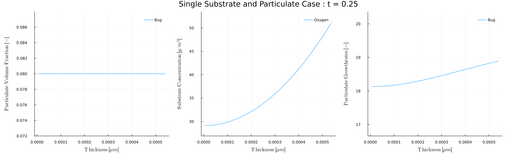
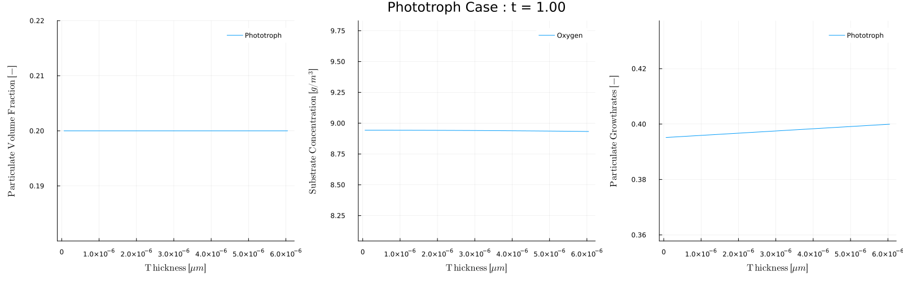
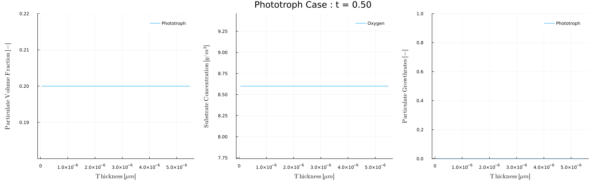

Postprocessing
When a simulation completes the solver outputs solution data that can be postprocessed to see additional values and/or plots.
Using the simulation outputs
When a simulation is executed using t,zm,Xt,St,Pb,Sb,Lf,sol = BiofilmSolver(p), which is a line of code within each of the Case files solver will produce all the outputs described below
t- array of the solution timeszm- array of the biofilm grid locations at the end of the simulationt[end]Xt=Xt(t)- array of the particulate concentrations within the tank as a function of timeSt=St(t)- array of the substrate concentrations within the tank as a function of timePb=Pb(z)- array of the particulate volume fractions within the biofilm as a function of location within biofilm at the end of the simulationSb=Sb(z)- array of the substrate concentrations within the biofilm as a function of location within biofilm at the end of the simulationLf=Lf(t)- array of the biofilm thickness as a function of timesol- entire solution from the ODE solver - contains the time history of all the variables. This variable is difficult to parse but is used by the functions described below.
The output can be analyzed using Julia commands. For example, after running Case1.jl (see Run Biofilm.jl), the maximum substrate concentration in the tank could be found
julia> maximum(St)
65.37595010026911Plot the final solution
The solution can be plotted using the plot recipe biofilm_plot(sol,p), which will produce the standard plots of the simulation. This is useful to make a plot of the solution at the end of the simulation, especially if plots are turned off during the simulation using the optional parameter makePlots=false.
An optional third argument desc can be passed to biofilm_plot, e.g., biofilm_plot(sol,p,"Case A"), which will add "Case A" to the legend labels.
Biofilm.biofilm_plot — Functionbiofilm_plot(sol,p)
biofilm_plot(sol,p,desc)Plot the solution of a biofilm simulation. Makes 6 plots Xt(t), St(t), Lf(t), Pb(z), Sb(z), μ(z) or src(z).
biofilm_analyze() - Query Simulation at Specified Times
The biofilm_analyze(sol,p,t) function provides a simple way to postprocess data. This function takes in the computed solution sol and parameters p and analyzes the results and the specified time or times t. For example, after running Case1.jl (see Run Biofilm.jl) you could look at the solution at t=0.25 days using
julia> biofilm_analyze(sol,p,0.25)
Analyzing Single Substrate and Particulate Case
Time | Bug | Oxygen | min,max( Bug) | min,max( Oxygen) | Lf [μm]
0.250 | 102 | 51.7 | 0.08, 0.08 | 29.1, 51.3 | 545which displays the tank and biofilm particulates and substrates and biofilm thickness at the requested time. Multiple times can be included in the time parameter. For example to get the values at t=0, 0.25, 0.5, 0.75, 1.0 we can run
julia> biofilm_analyze(sol,p,0:0.25:1)
Analyzing Single Substrate and Particulate Case
Time | Bug | Oxygen | min,max( Bug) | min,max( Oxygen) | Lf [μm]
0.000 | 10 | 10 | 0.08, 0.08 | 0, 0 | 10
0.250 | 102 | 51.7 | 0.08, 0.08 | 29.1, 51.3 | 545
0.500 | 256 | 2.94 | 0.08, 0.08 | 0.568, 2.87 | 348
0.750 | 257 | 2.93 | 0.08, 0.08 | 0.745, 2.87 | 312
1.000 | 257 | 2.93 | 0.08, 0.08 | 0.761, 2.87 | 309Adding an optional argument makePlot=true, i.e., biofilm_analyze(sol,p,0.25,makePlot=true) will produce a plot of the biofilm quantities at the specified time(s)
julia> biofilm_analyze(sol,p,0.25,makePlot=true)
Analyzing Single Substrate and Particulate Case
Time | Bug | Oxygen | min,max( Bug) | min,max( Oxygen) | Lf [μm]
0.250 | 102 | 51.7 | 0.08, 0.08 | 29.1, 51.3 | 545
Biofilm.biofilm_analyze — Functionbiofilm_analyze(sol,p,times)
biofilm_analyze(sol,p,times,makePlot=true)Take solution from biofilm solver and outputs variabes and a plot of biofilm variables.
biofilm_movie() - Make movie of biofilm quantities
The particulate and substrate concentrations change throughout the simulation, and it is often useful to make movies of how these change over time.
The biofilm_movie(times) function provides a convenient way to make these movies. For example, to post process Case 5 - Phototroph, which has a light that turns on and off throughout each day we could make a movie of the biofilm conditions during the day and during night. To make a movie of every 5 days when the light is on, that is at times=1,5,10,... we can use
julia> biofilm_movie(sol,p,1:5:t[end],filename="phototroph_day.gif",fps=5)which will analyze each day and combine the results into the movie: 
To produce the results every 5th night, that is at times=0.5, 5.5, ... we can use
julia> biofilm_movie(sol,p,0.5:5:t[end],filename="phototroph_night.gif",fps=5)
Note that during the day the growth rate is zero and the oxygen concentration is 8.6, which is the inflow concentration Sin. During the day however, the phototroph growth rate is non-zero, and the growth produces oxygen.
Biofilm.biofilm_movie — Functionbiofilm_movie(sol,p,times)
biofilm_movie(sol,p,times,filename="anim.gif", fps=20)Make a movie of the biofilm particulate volume fraction, substrate concentration, and particulate growthrates at the specified times.
Optional arguments
- filename: name and type of output, i.e., "biofilm.mp4", "biofilm.gif"
- framerate
Examples:
Create movie with t=0,1,...,10
julia> biofilm_movie(sol,p,0:1:10)Create movie with specified filename and framerate
julia> biofilm_movie(sol,p,0:1:10,filename="biofilm.gif",fps=10)biofilm_sol2csv() - Convert solution to CSV file
The function biofilm_sol2csv( sol, p) takes the output of a simulation and writes the results as a CSV file which can be open in a spreadsheet program (e.g., Excel). Each row in the file corresponds to a different output time and the column contains the time, the tank particulate and substrate concentrations, biofilm particulate volume fractions and substrate concentrations, and finally the biofilm thickness. This function can be useful for users that prefer looking at results in a spreadsheet.
Biofilm.biofilm_sol2csv — Functionbiofilm_sol2csv(sol,p)
biofilm_sol2csv(sol,p; filename)Saves the solution of biofilm problem (sol) to a CSV file biofilm.csv The filename can be changed with the optional parameter
Examples
julia> biofilm_sol2csv(sol,p)
julia> biofilm_sol2csv(sol,p,filename="myfile.csv")